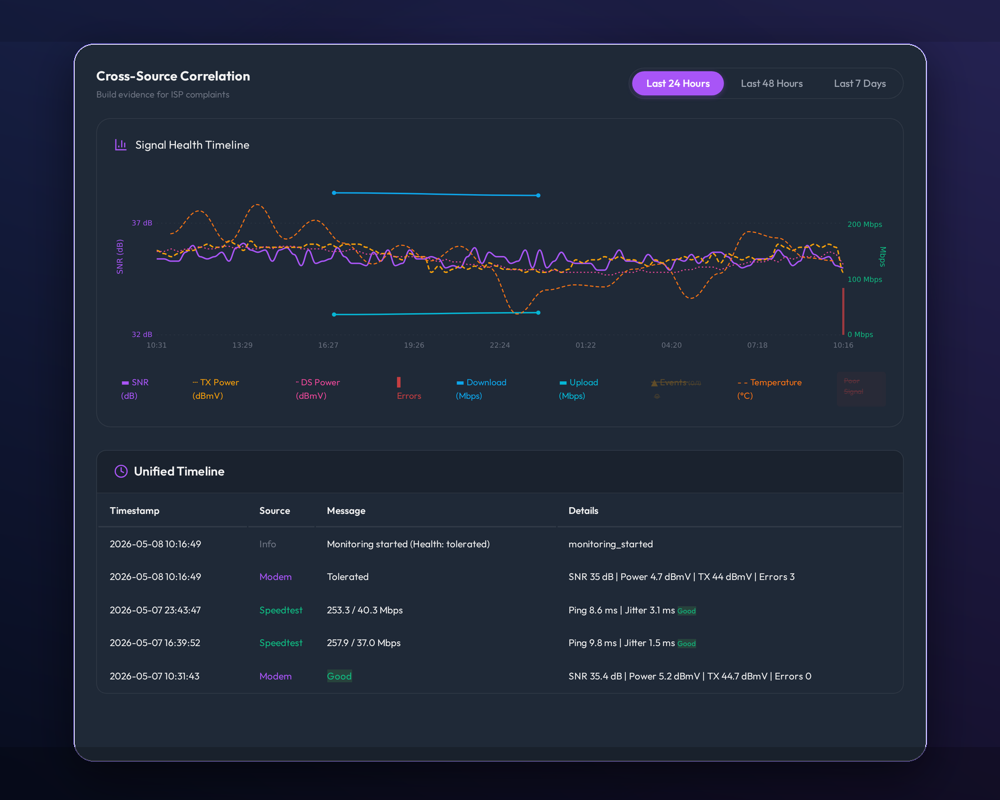
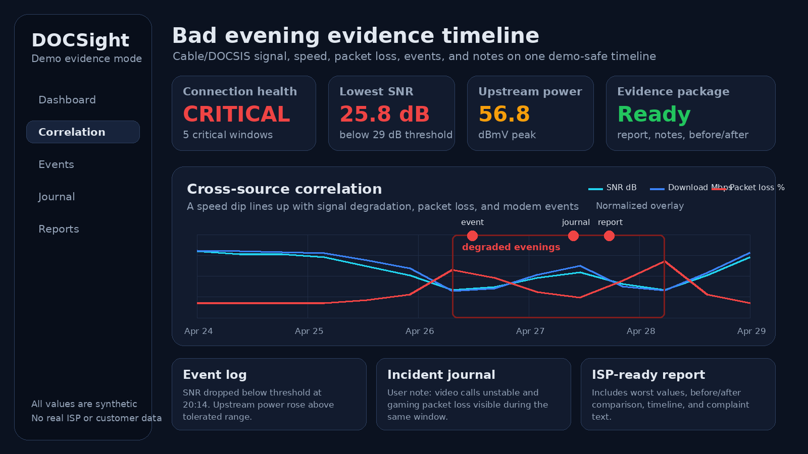

Your ISP says everything is fine. DOCSight gives you proof.
DOCSight turns DOCSIS signal history, speed tests, latency, modem events and incident notes into one local evidence trail for intermittent cable problems.
- Self-hosted
- Demo mode
- Exports
- 16 modem families
- HA + MQTT
- MIT licensed

A local timeline makes the pattern visible before the next support call.
A modem screenshot is a moment. DOCSight is the timeline.
Intermittent cable issues are hard to prove because they disappear before support looks. DOCSight keeps the signal, performance and incident context together so the story survives the bad evening.
Explore the workflow without connecting a modem first.
DOCSIS-focused support with Generic Router mode for broader setups.
Runs on your own hardware. Export evidence only when you choose to.
From bad evening to evidence package
DOCSight is built around the workflow people actually need when the connection looks fine only after the problem is over.
Monitor
Capture DOCSIS signal health, latency, speed and outages continuously.
Correlate
Line up signal drops, packet loss, speed dips, modem events and notes.
Document
Keep incidents, journal entries and before/after checks in one place.
Act
Export complaint-ready reports and shareable evidence with support.

Show the problem without exposing a real connection.
The public proof pack uses synthetic data with a demo provider and demo gateway. It is safe for README, community replies and launch posts.
- Bad evening screenshot with signal, speed, events and notes
- Germany-oriented sample complaint report PDF
- Community templates for redacted setup and evidence stories
Not another generic uptime dashboard
DOCSight works alongside monitoring tools. Its job is the missing evidence layer for cable-line problems.
Strong fit, clear boundaries
DOCSight is most useful when it can see cable signal data, but it is honest about what it is not.
You have recurring cable drops, bad evenings, unstable video calls, gaming jitter, suspicious signal values, or an ISP support loop that needs better evidence.
You only need HTTP uptime alerts, a public status page, a managed cloud service, or a legal guarantee. DOCSight documents evidence, it does not promise an outcome.
Start with the demo, then connect your own modem.
No router is required for the first look. Demo mode gives you realistic history so you can decide whether DOCSight fits your evidence workflow.